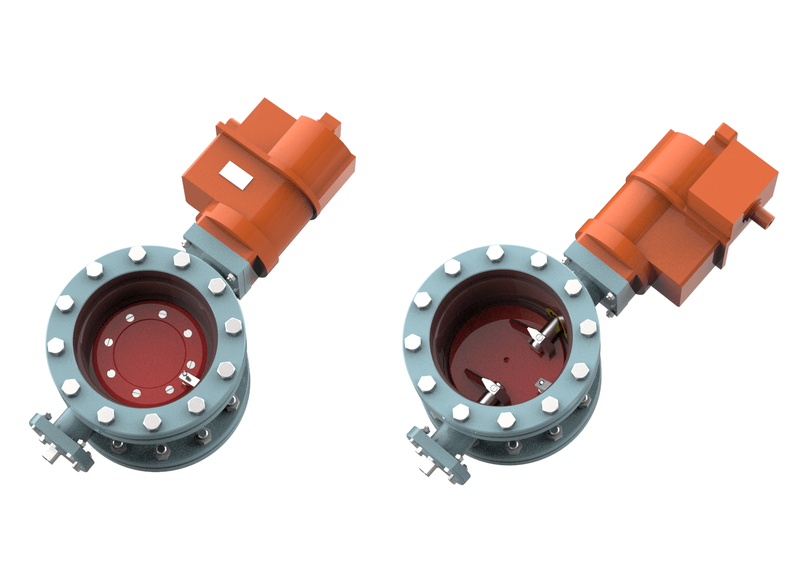
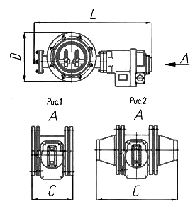
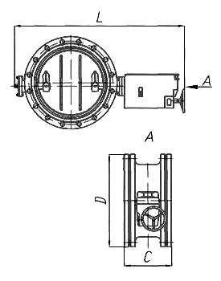

Топливная арматура: предохранительно-запорный клапан (ПЗК) газовый
Предохранительно-запорный клапан (ПЗК) со встроенным электромеханизмом изготовлен в соответствии с ТУ 3742-001-27201850-95 и служит для автоматического прекращения подачи газового топлива в топку котла с камерным сжиганием при аварийных ситуациях или останове.
Клапан устанавливается в любом пространственном положении перед горелкой и может управляться как автоматически и дистанционно - с пульта управления, для осуществления открытия (взвода) и закрытия (сброса) при помощи блока управления и защиты (БУП М или БУП У) электромеханизма (МБО), так и вручную - непосредственно с площадки.
Технические характеристики газовых предохранительно-запорных клапанов:
| 1. | Основная рабочая среда ГОСТ 5542 | природный газ |
| 2. | Тип присоединения | фланцевое |
| 3. | Класс герметичности по ГОСТ 9544 | А (первый) |
| 4. | Привод |
Ду<400мм МБО-63/1-0,25 (МБОВ-63/1-0,25)
Ду≥400мм МБО-63/1-0,25У (Т) МБОВ-(40-125) 63Нм |
| 5. | Управление | БУП М, БУП У |
| 6. | Блок аварийной защиты | БАЗ-01М |
| 7. | Тип конструкции | затворная, прямоточная |
| 8. | Напряжение (частота) питания электромеханизма, В (Гц) |
эл. цепи механизма взвода переменное, 220 (50)
эл. цепи механизма сброса постоянное, 220 |
| 9. | Мах потребляемая мощность электромеханизма, Вт |
механизма взвода (сброса) для МБО-25/1-0,25 - 50 (20)
механизма взвода (сброса) для МБО-63/1-0,25 - 60 (40) |
| 10. | Номинальный противодействующий момент нагрузки, Нм |
для МБО-25/1-0,25 (МБОВ-25/1-0,25) - 25
для МБО-63/1-0,25 (МБОВ-63/1-0,25) - 63 |
| 11. | Наработка на отказ до капремонта, циклов, не менее | 500 |
| 12. | Степень защиты по ГОСТ 14254 для МБО | IP-65 |
| 13. | Рабочий угол поворота, град. | 90° |
| 14. | Время закрытия клапана, сек, не более | 1 |
| 15. | Время полного открытия клапана, сек. |
для МБО-25/1-0,25 - 15+10%
для МБО-63/1-0,25 - 25+10% |
| 16. | Максимальная температура рабочей среды, °С (К) |
для углеводородных газов ГОСТ 5542 - плюс 60 (333)
для коксовых и доменных газов - плюс 100 (273) |
| 17. | Минимальная температура рабочей среды, °С (К) |
для углеводородных газов ГОСТ 5542 - минус 60 (213)
для коксовых и доменных газов - плюс 5 (278) |
| 18. | 18 Механизм МБОВ имеет взрывобезопасный уровень взрывозащиты, вид взрывозащиты “взрывонепроницаемая оболочка”, маркировку взрывозащиты 1ExdIIBT5, и может применяться во взрывоопасных зонах согласно ГОСТ Р 51330.9 и ГОСТ 51330.13 и другим нормативно-техническим документам, определяющим применимость электрооборудования во взрывоопасных зонах, где возможно образование взрывоопасных смесей категории IIА и IIВ групп Т1, Т2, Т3, Т4, Т5 согласно ГОСТ Р 51330.5. | |
| 19. | Температура окружающей среды ГОСТ 15150, °С (К) |
УХЛ2 (районы с умеренным и холодным климатом):
-плюс 40 (313) -минус 60 (213) Т2 (районы с тропическим климатом): -плюс 50 (323) -минус 10 (263) |
Технические данные газовых предохранительно-запорных клапанов:
| Шифр изделия | Обозначение чертежа | Ду, мм | *Ру, MПа (кгс/см2) | **Масса, кг |
| ЭК-111М-01 | ЭМИ 492425.002 | 100 | 1,6(16) | 47 |
| ЭК-111М | ЭМИ 492425.003 | 150 | 42 | |
| ЭК-112М | ЭМИ 492425.004 | 200 | 57 | |
| ЭК-113М-01 | ЭМИ 492435.001 | 250 | 123 | |
| ЭК-113М | ЭМИ 492435.002 | 300 | 95 | |
| ЭК-114М | ЭМИ 492435.003 | 400 | 176 | |
| ЭК-115М | ЭМИ 492435.004 | 500 | 243 |
*Ру - условное давление;
** Масса без учета массы привода
Габаритные и присоединительные размеры газовых предохранительно-запорных клапанов:
ПЗК Ду 100, Ду 150, Ду 200, Ду 250, Ду 300:

| Обозначение | Рис. | Dу, мм | Размеры, мм | *Масса, кг | **Электромеханизм | ||
| L | D | C | |||||
| ЭМИ 492425.002 (ЭК-111М-01) | 2 | 100 | 670 | 260 | 450 | 47 | МБО-25/1-0,25 (МБОВ-25/1-0,25) |
| ЭМИ 492425.003 (ЭК-111М) | 1 | 150 | 221 | 42 | |||
| ЭМИ 492425.004 (ЭК-112М) | 1 | 200 | 810 | 305 | 231 | 57 | МБО-63/1-0,25 (МБОВ-63/1-0,25) |
| ЭМИ 492435.001 (ЭК-113М-01) | 2 | 250 | 920 | 420 | 580 | 123 | |
| ЭМИ 492435.002 (ЭК-113М) | 1 | 300 | 254 | 95 | |||
* Масса без учета массы привода.
** Возможна установка другого электромеханизма
ПЗК Ду 400, Ду 500:

| Обозначение | Dу, мм | Размеры, мм | *Масса, кг | ** Электромеханизм | ||
| L | D | C | ||||
| ЭМИ 492435.003 (ЭК-114М) | 400 | 1015 | 540 | 288 | 176 | МБОВ-63/1-0,25У (Т) |
| ЭМИ 492435.004 (ЭК-115М) | 500 | 1120 | 645 | 332 | 243 | |
* Масса без учета массы привода.
** Возможна установка другого электромеханизма